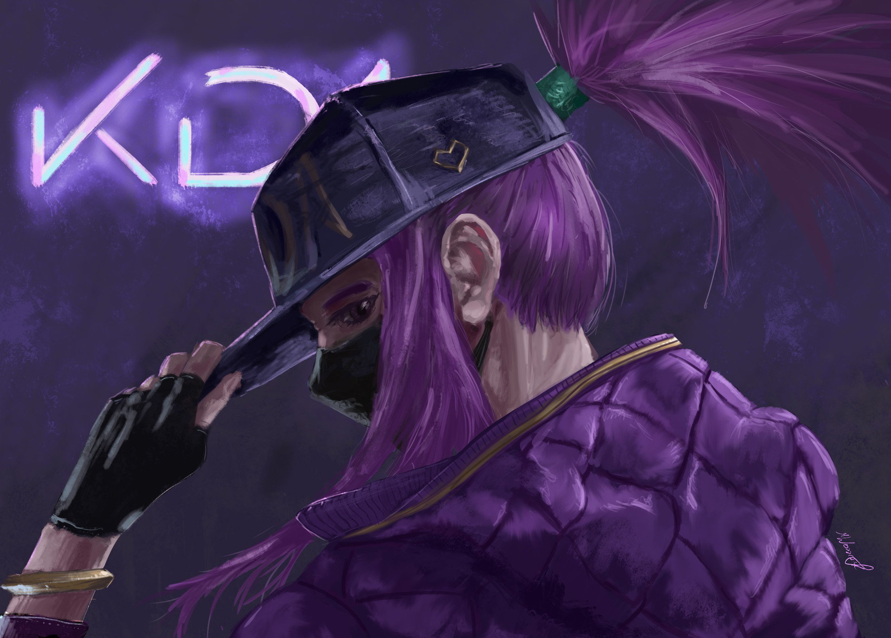

Sobre mí
Me presento, tengo 14 años, nací en Málaga y vivo en Torremolinos, lo que más me gusta son los videojuegos y el anime. En mi tiempo libre suelo jugar con mi perrita, salir a la calle a andar o jugar a League of Legends. No puedo comer brócoli, siempre que lo como, vomito, y no es nada agradable, pero mi comida favorita son las croquetas, no sé qué tienen, pero me encantan. Siempre he sido de estudiar y sacar buenas notas, el año pasado mis notas finales fueron todas de 10, supongo que tengo un don para estudiar con mucha facilidad, porque se me da muy bien. Una de mis películas favoritas es Ready Player One, me encanta porque es una historia futurista en la que las gafas de realidad virtual te hacen sentir realmente que estás dentro del juego, además de que te enseña que no siempre te puedes refugiar en los videojuegos, también hay que enfrentar a la realidad y vivirla.
La cita que más me gusta sobre videojuegos es:
No hay nada más real que la realidad, porque la realidad, es real.
-James Halliday